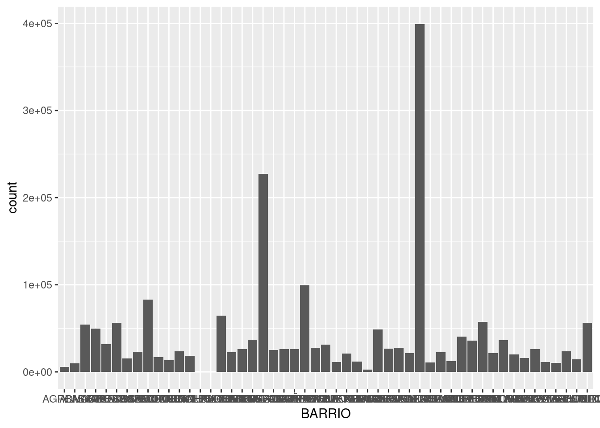
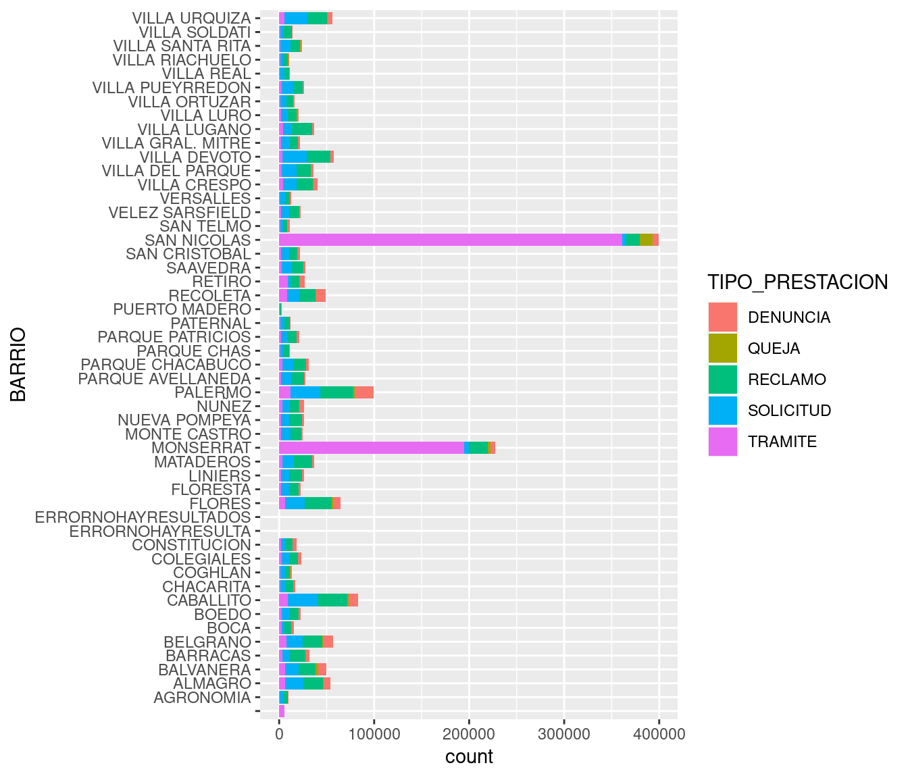
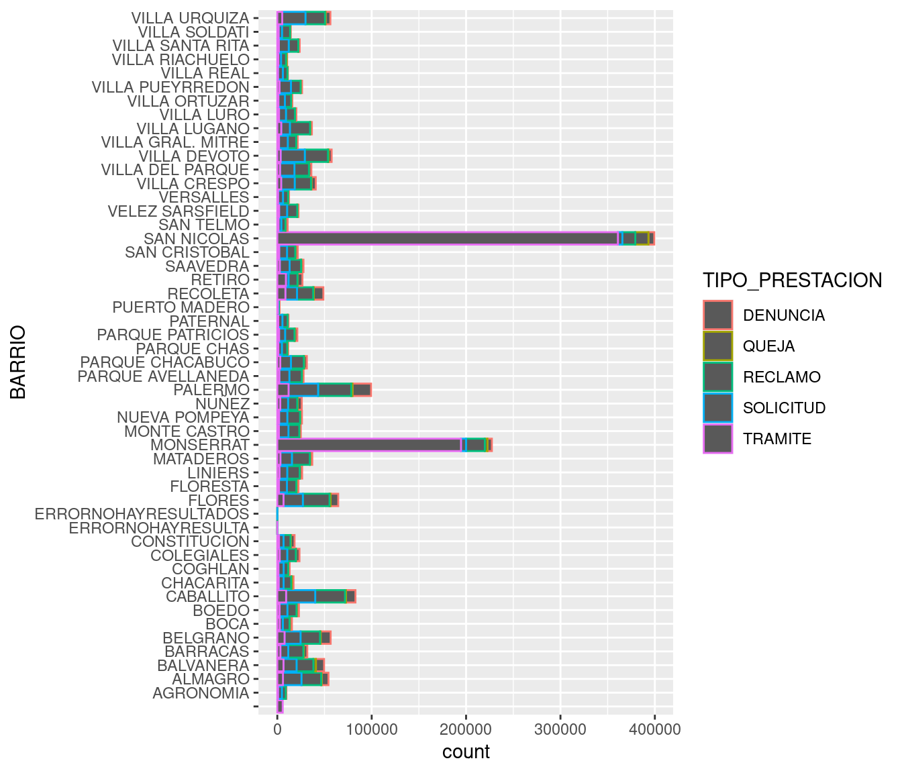
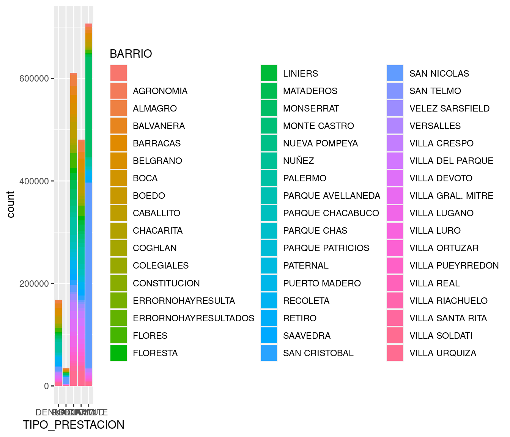
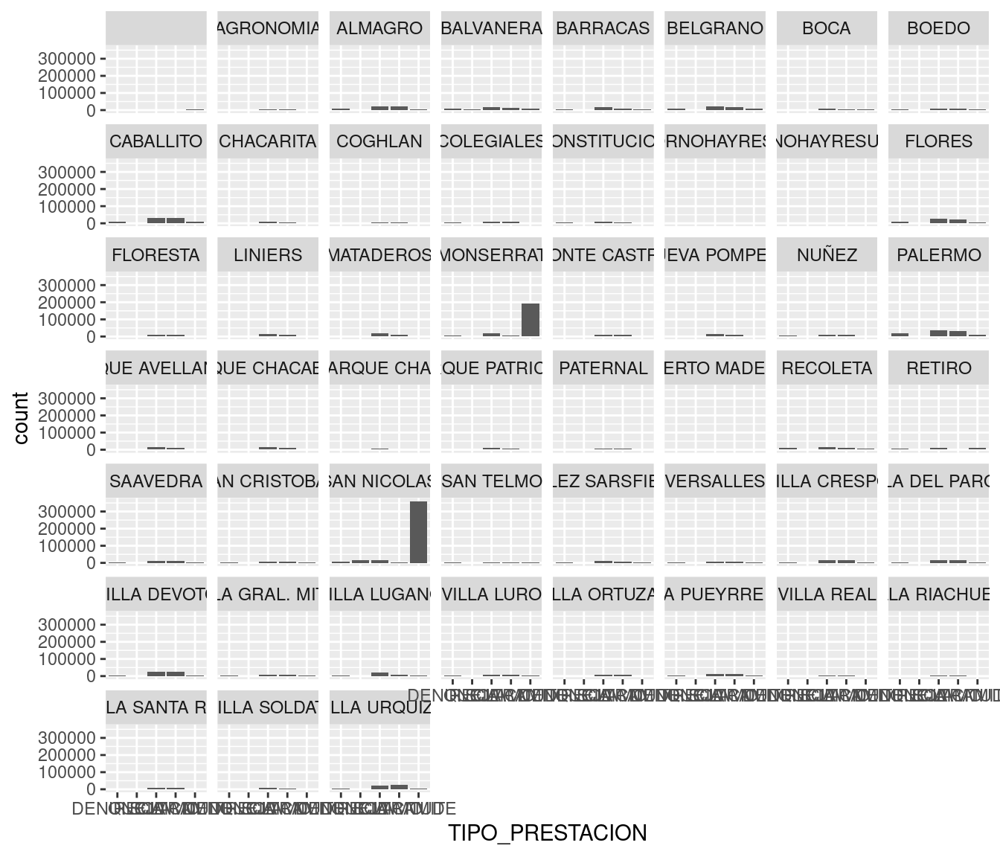

- 1 ¿Qué es la ciencia de datos?
- 2 Una presentación a toda marcha de R
- 3 Poniendo los datos en forma
- 4 Visualización
- 5 Modelado estadístico
- 6 Información geográfica y mapas
4.4 Gráficos de barras
Si hay un tipo de visualización que compite en popularidad con el scatterplot, son los gráficos de barras (bar charts en inglés). Solemos encontrarlos acompañando artículos en diarios y revistas, sin duda porque son fáciles de leer de un vistazo. Los gráficos de barras se usan mucho para hacer comparaciones: quién tiene más y quién tiene menos de alguna variable continua cómo ingresos, edad, altura o similares.
Comparemos la suma total de registros que alcanza cada barrio. Con geom_bar podemos agregar una capa de visualización con gráficos de barras. Los parámetros a definir dentro de aes() son x, donde va una variable categórica, y en forma opcional weight, que indica la variable a sumar para determinar la altura de cada barra. Si no especificamos un weight, simplemente se cuenta cuantas veces aparece cada categoría en el dataframe, en la práctica un conteo o frecuencia de aparición. En nuestro dataset cada fila incluye un período y un total de contactos recibidos. Nosotros no estamos interesados en cuantas veces aparece cada barrio, sino en la suma de la columna total para cada uno de ellos, así que vamos a usar weight = total.

Tenemos dos problemas. El primero es que los valores en el eje de las y son grandes, y R nos quiere hacer un favor expresándolos en notación científica. La notación científica es práctica para ahorrar espacio, pero no queda bien en visualizaciones. Para pedirle que no lo haga mas, usamos esta función
y por el resto de la sesión nos libramos de la notación científica. Listo.
El segundo problema es que los nombres de los barrios resultan del todo ilegibles porque no tienen espacio. En un gráfico, el eje horizontal es un muy mal lugar para poner muchas categorías con nombre, ya que el solapamiento se vuelve inevitable. Sería mejor tener los nombre en el eje vertical, donde se pueden escribir uno encima del otro sin pisarse ¡La solución es invertir los ejes de de coordenadas! Sólo necesitamos agregar coord_flip:

Ahora si podemos interpretar el gráfico. San Nicolás y Monserrat son los barrios a la cabeza, lo cual no sorprende sabiendo que pertenecen a la ya legendaria comuna 1.
Los gráficos de barras, además de comparar, también son buenos para mostrar la composición interna de las cosas: que “hay dentro”, que componentes contribuye a un determinado total. Vamos a mostrar entonces cuanto contribuye cada tipo de trámite al total por barrio, usando el parámetro estético fill (relleno). geom_bar realiza un segmentado automático de cada barra, con la proporción que le corresponde a cada subcategoría:
ggplot(atencion_ciudadano) +
geom_bar(aes(x = BARRIO, weight = total, fill = TIPO_PRESTACION)) +
coord_flip()
!Esos trámites otra vez! En cierto modo, estamos recorriendo las mismas conclusiones a las que arribamos usando scatterplots, pero mostrando la información de otra manera. De más está decirlo, hay muchas maneras de contar las cosas.
En lugar de relleno podríamos haber usado color, tal como hicimos con los puntos, pero los resultado es un poco menos legible y no luce tan bien. La variable color modifica la silueta de las barras, pero no su interior:
ggplot(atencion_ciudadano) +
geom_bar(aes(x = BARRIO, weight = total, color = TIPO_PRESTACION)) +
coord_flip()
También podemos cambiar las categorías. Si quisiéramos ver el total de registros por cada tipo de trámite:
Notamos que las quejas y denuncias son eventos poco frecuentes en comparación con las otras clases de contacto entre ciudadanos y ciudad. En esta ocasión no recurrimos a coord_flip, ya que las categorías son pocas y tienen espacio suficiente en el eje horizontal.
¿Y si mostramos el aporte de cada barrio al total global de cada tipo de contacto?

Hemos obtenido una visualización indigerible. Quizás con un facetado por barrio…
ggplot(atencion_ciudadano) +
geom_bar(aes(x = TIPO_PRESTACION, weight = total)) +
facet_wrap(~BARRIO)
Esta opción es un poco mejor, ya que al menos permite identificar pronto los barrios salientes, y discernir diferencias generales si se la mira con paciencia. Una visualización tan densa en información puede resultar ideal para “uso personal”, explorando de forma rápida datos con los que estamos familiarizados, pero es poco recomendable para compartir con otros.
En general, para evitar la confusión asociada a variables con docenas de categorías se busca simplificar definiendo menos grupos. Por ejemplo, como hicimos al comienzo al separar por comunas, que son sólo quince, en lugar de por barrios.